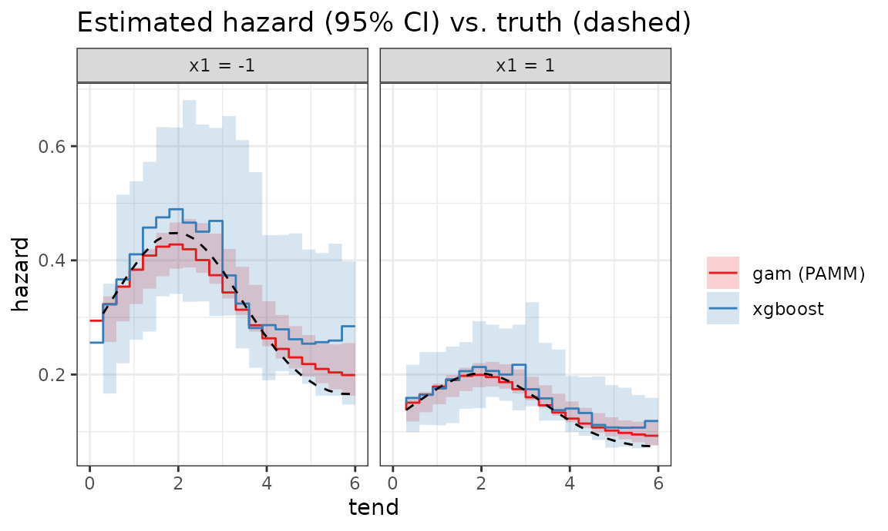
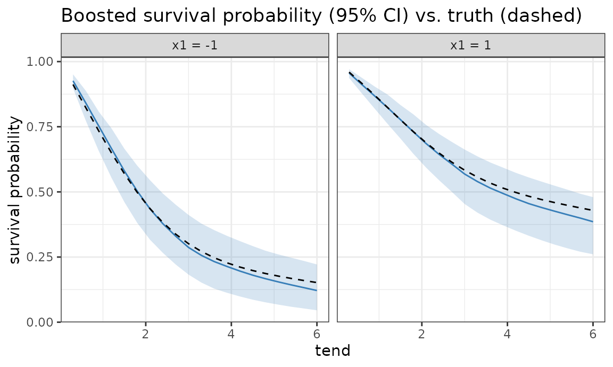
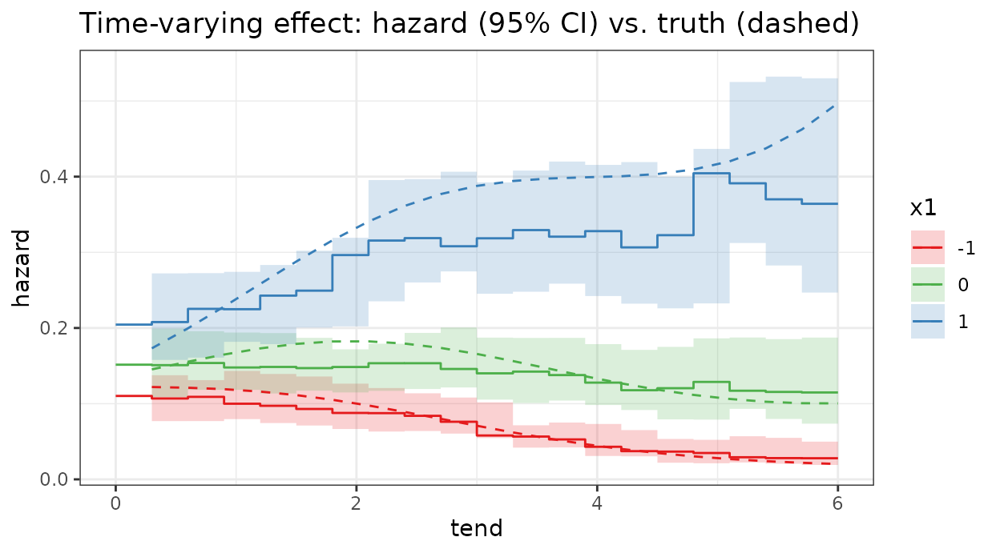
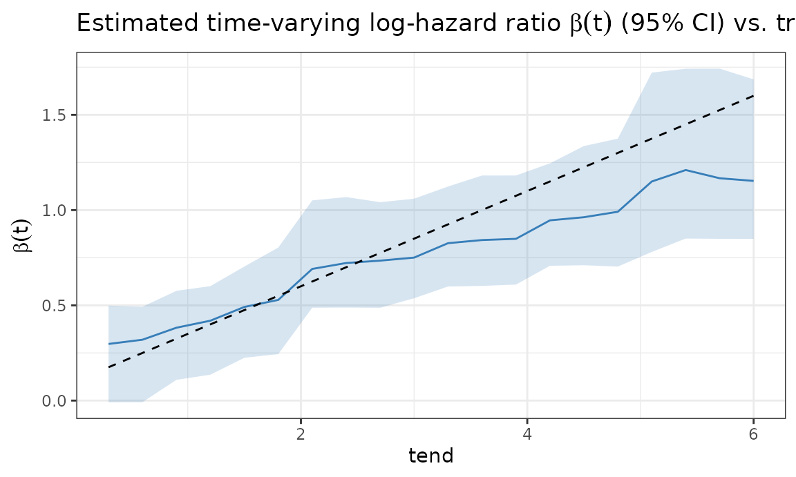
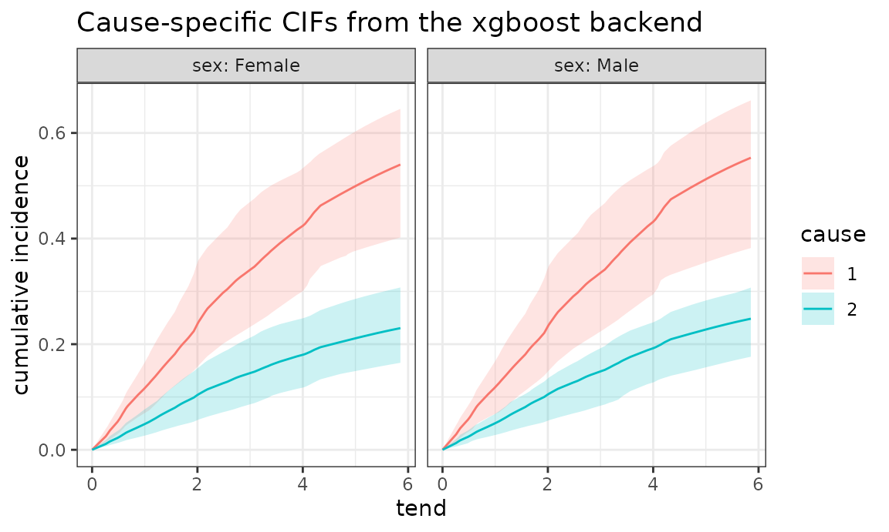

vignettes/xgboost-backend.Rmd
xgboost-backend.RmdThe key idea behind PAMMs (Bender et al. 2018) is a data
transformation: a time-to-event data set is split into the
piece-wise exponential data (PED) format, and the
hazard is then estimated by a Poisson regression with a
log-interval-length offset. The default estimation engine in
pammtools is mgcv::gam, but
the reduction to Poisson regression means that any learner that
can do count/Poisson regression with an offset can serve as a PAMM
backend.
To make a backend a first-class citizen,
pammtools abstracts every model behind a
small internal interface and builds all of its post-processing
on top of it. Two primitives are enough for point estimates and
simulation-based intervals of every derived quantity:
get_hazard(object, newdata) — the point
hazard (a numeric vector);sim_hazard(object, newdata, nsim) — a matrix of
hazard draws from the model’s sampling distribution, used for
the simulation-based intervals.Analytic ("default"/"delta") intervals
additionally need the coefficient triplet make_X() /
get_coefs() / get_Vp(); a backend that does
not provide them simply uses ci_type = "sim".
Everything else — add_hazard(),
add_cumu_hazard(), add_surv_prob() (point
estimates and intervals), and the geom_*
plotting layers — is written against this interface. So to teach
xgboost to act as a PAMM backend we only need to express it
in these terms; the entire workflow then works unchanged.
As the example learner we use xgboost
(Chen and Guestrin
2016) with its built-in
objective = "count:poisson". Since a boosted tree ensemble
has no coefficient covariance, we obtain uncertainty from a
subject-level bootstrap ensemble (bagging): the point
estimate is the bagged mean hazard, and confidence bands are percentiles
across the ensemble members.
1. A ped becomes an xgboost data
set. A ped already carries the bookkeeping we need
in its attributes: intvars lists the internal interval
columns, ped_status is the Poisson response, and
offset is the log-interval-length. We keep
tend as the time feature, drop the remaining
internal columns and — the only trick — pass the PED offset
as xgboost’s base_margin, so it plays the role
of the Poisson offset.
xgb_feature_cols <- function(ped) {
internal <- attr(ped, "intvars")
keep <- intersect(c("cause", "transition"), names(ped))
c("tend", setdiff(names(ped), setdiff(internal, keep)))
}
as_xgb_data <- function(ped) {
features <- xgb_feature_cols(ped)
x <- model.matrix(~ . - 1, data = as.data.frame(ped)[, features, drop = FALSE])
d <- xgb.DMatrix(x, label = ped[["ped_status"]])
setinfo(d, "base_margin", ped[["offset"]]) # PEM offset = log(interval length)
d
}2. Fitting = a bootstrap ensemble of boosters. We
resample subjects (the id_var) with replacement and fit one
booster per replicate. Setting base_score = 1 together with
the offset means that at prediction time (where we supply no
base_margin) the default margin is
log(base_score) = 0, so predictions are the bare hazard
exp(trees). We store the ensemble plus the features it
expects; the object is a plain list of class pam_xgb.
xgb_pam <- function(ped, params = list(), nrounds = 200, nboot = 40, ...) {
features <- xgb_feature_cols(ped)
id_var <- attr(ped, "id_var")
X <- model.matrix(~ . - 1, data = as.data.frame(ped)[, features, drop = FALSE])
y <- ped[["ped_status"]]
off <- ped[["offset"]]
feature_levels <- lapply(as.data.frame(ped)[, features, drop = FALSE], function(x) {
if (is.factor(x)) {
levels(x)
} else if (is.character(x)) {
sort(unique(x))
} else {
NULL
}
})
rows_by_id <- split(seq_len(nrow(ped)), ped[[id_var]])
params <- c(params, list(objective = "count:poisson", base_score = 1, nthread = 2))
fit_rows <- function(rows) {
d <- xgb.DMatrix(X[rows, , drop = FALSE], label = y[rows])
setinfo(d, "base_margin", off[rows])
xgb.train(params = params, data = d, nrounds = nrounds, verbose = 0, ...)
}
models <- lapply(seq_len(nboot), function(b) {
fit_rows(unlist(rows_by_id[sample(names(rows_by_id), replace = TRUE)],
use.names = FALSE))
})
structure(
list(models = models, orig_features = features,
feature_levels = feature_levels,
trafo_args = attr(ped, "trafo_args")),
class = "pam_xgb")
}3. Plugging into the pammtools
interface. pammtools builds every derived
quantity and its simulation-based confidence intervals from two
per-model primitives, so all we implement are these two S3 methods:1
get_hazard() returns the point hazard
as a plain vector (here the bagged mean over the ensemble);sim_hazard() returns a matrix of hazard
draws (one column per draw). For our ensemble a “draw” is a
bootstrap member, so we predict the feature matrix through every
booster.
get_hazard.pam_xgb <- function(object, newdata, ...) {
rowMeans(sim_hazard.pam_xgb(object, newdata)) # bagged point hazard
}
sim_hazard.pam_xgb <- function(object, newdata, nsim = NULL, ...) {
xdf <- as.data.frame(newdata)[, object$orig_features, drop = FALSE]
for (nm in names(object$feature_levels)) {
if (!is.null(object$feature_levels[[nm]]) && nm %in% names(xdf)) {
xdf[[nm]] <- factor(xdf[[nm]], levels = object$feature_levels[[nm]])
}
}
X <- model.matrix(~ . - 1, data = xdf)
dm <- xgb.DMatrix(X)
vapply(object$models, function(m) predict(m, dm), numeric(nrow(X))) # rows x members
}That is the whole backend. add_hazard(),
add_cumu_hazard(ci_type = "sim") and
add_surv_prob(ci_type = "sim") now work for
pam_xgb objects, returning point estimates and bootstrap
intervals, and the geom_* layers plot them, all for free.
The very same engine also drives add_cif() (competing
risks) and add_trans_prob() (multistate) from these two
primitives — a backend that keeps the cause/transition indicator among
its features gets those for free too.
We simulate from a known hazard with sim_pexp and
transform to PED with as_ped, exactly as for a standard
PAMM. Passing cut to as_ped fixes a modest
interval grid (here 20 intervals), which keeps the boosters fast to
fit.
set.seed(2024)
n <- 2000
df <- data.frame(x1 = runif(n, -2, 2), x2 = runif(n, 0, 4))
# true log-hazard: smooth baseline + linear x1 + linear x2
f_true <- function(t, x1, x2) -2.2 + 0.5 * sin(0.8 * t) - 0.4 * x1 + 0.25 * x2
sim_df <- sim_pexp(~ -2.2 + 0.5 * sin(0.8 * t) - 0.4 * x1 + 0.25 * x2, df,
cut = seq(0, 6, by = 0.1))
ped <- as_ped(sim_df, Surv(time, status) ~ x1 + x2, cut = seq(0, 6, by = 0.3))We fit the boosted PAMM with xgb_pam() and, for
comparison, a standard GAM-based PAMM.
xgb_fit <- xgb_pam(ped,
params = list(eta = 0.1, max_depth = 3, min_child_weight = 20,
subsample = 0.7, colsample_bytree = 0.8),
nrounds = 200, nboot = 40)
pam <- gam(ped_status ~ s(tend) + x1 + s(x2), data = ped,
family = poisson(), offset = offset)For prediction we build a grid with make_newdata and add
the hazard with the same add_hazard() call for
both models — the boosted one is served by our
get_hazard.pam_xgb method, returning bootstrap confidence
bands.
nd <- ped %>% make_newdata(tend = unique(tend), x1 = c(-1, 1), x2 = c(2))
haz <- bind_rows(
nd %>% group_by(x1, x2) %>% add_hazard(xgb_fit, ci_type = "sim") %>% mutate(method = "xgboost"),
nd %>% group_by(x1, x2) %>% add_hazard(pam, ci = TRUE) %>% mutate(method = "gam (PAMM)")
) %>%
mutate(truth = exp(f_true(tend, x1, x2)),
profile = paste0("x1 = ", x1))
ggplot(haz, aes(x = tend)) +
geom_stepribbon(aes(ymin = ci_lower, ymax = ci_upper, fill = method), alpha = 0.2) +
geom_stephazard(aes(y = hazard, col = method)) +
geom_line(aes(y = truth), lty = 2) +
facet_wrap(~ profile) +
scale_color_manual(values = c("xgboost" = Set1[2], "gam (PAMM)" = Set1[1])) +
scale_fill_manual(values = c("xgboost" = Set1[2], "gam (PAMM)" = Set1[1])) +
labs(y = "hazard", col = "", fill = "",
title = "Estimated hazard (95% CI) vs. truth (dashed)")
Both backends recover the baseline shape and the covariate effects; the GAM is smooth by construction, while the boosted hazard is piece-wise constant. The bootstrap bands of the boosted fit are comparable to the GAM’s Bayesian intervals.
Survival probabilities come from the same machinery via
add_surv_prob() with ci_type = "sim" — no
manual cumulative sums:
surv <- nd %>%
group_by(x1, x2) %>%
add_surv_prob(xgb_fit, ci_type = "sim") %>%
ungroup() %>%
group_by(x1, x2) %>%
mutate(truth = exp(-cumsum(exp(f_true(tend, x1, x2)) * (tend - lag(tend, default = 0))))) %>%
ungroup() %>%
mutate(profile = paste0("x1 = ", x1))
ggplot(surv, aes(x = tend)) +
geom_ribbon(aes(ymin = surv_lower, ymax = surv_upper), alpha = 0.2, fill = Set1[2]) +
geom_line(aes(y = surv_prob), col = Set1[2]) +
geom_line(aes(y = truth), lty = 2) +
facet_wrap(~ profile) +
labs(y = "survival probability",
title = "Boosted survival probability (95% CI) vs. truth (dashed)")
Because tend is just another feature, the trees can
model tend-by-covariate interactions,
i.e. time-varying effects, without us specifying them.
Here the effect of x1 grows over time,
β(t) = 0.1 + 0.25 t — a clear violation of proportional
hazards.
set.seed(7)
n <- 4000
df2 <- data.frame(x1 = runif(n, -1.5, 1.5), x2 = runif(n, -1, 1))
beta_true <- function(t) 0.1 + 0.25 * t
f2_true <- function(t, x1, x2) -2.0 + 0.3 * sin(0.8 * t) + beta_true(t) * x1 + 0.3 * x2
sim2 <- sim_pexp(~ -2.0 + 0.3 * sin(0.8 * t) + (0.1 + 0.25 * t) * x1 + 0.3 * x2, df2,
cut = seq(0, 6, by = 0.1))
ped2 <- as_ped(sim2, Surv(time, status) ~ x1 + x2, cut = seq(0, 6, by = 0.3))
xgb2 <- xgb_pam(ped2,
params = list(eta = 0.1, max_depth = 3, min_child_weight = 20,
subsample = 0.7, colsample_bytree = 0.8),
nrounds = 200, nboot = 40)The estimated hazard for x1 ∈ {-1, 0, 1} shows the gap
between the curves widening over time, tracking the truth:
nd2 <- ped2 %>% make_newdata(tend = unique(tend), x1 = c(-1, 0, 1), x2 = c(0))
haz2 <- nd2 %>%
group_by(x1, x2) %>%
add_hazard(xgb2, ci_type = "sim") %>%
ungroup() %>%
mutate(truth = exp(f2_true(tend, x1, x2)), x1 = factor(x1))
ggplot(haz2, aes(x = tend, col = x1, fill = x1)) +
geom_stepribbon(aes(ymin = ci_lower, ymax = ci_upper), alpha = 0.2, col = NA) +
geom_stephazard(aes(y = hazard)) +
geom_line(aes(y = truth), lty = 2) +
scale_color_manual(values = Set1[c(1, 3, 2)]) +
scale_fill_manual(values = Set1[c(1, 3, 2)]) +
labs(y = "hazard", col = "x1", fill = "x1",
title = "Time-varying effect: hazard (95% CI) vs. truth (dashed)")
We can read off the estimated time-varying log-hazard ratio
β(t) = log h(x1 = 1) / h(x1 = 0) directly from the ensemble
(one ratio trajectory per member), and it recovers the true
linear-in-time effect with honest uncertainty:
feat_mat <- function(d) model.matrix(~ . - 1,
as.data.frame(d)[, xgb2$orig_features, drop = FALSE])
grid <- ped2 %>% make_newdata(tend = unique(tend), x1 = c(0, 1), x2 = c(0))
H1 <- vapply(xgb2$models, function(m) predict(m, xgb.DMatrix(feat_mat(filter(grid, x1 == 1)))),
numeric(length(unique(grid$tend))))
H0 <- vapply(xgb2$models, function(m) predict(m, xgb.DMatrix(feat_mat(filter(grid, x1 == 0)))),
numeric(length(unique(grid$tend))))
beta_hat <- data.frame(
tend = sort(unique(grid$tend)),
est = rowMeans(log(H1 / H0)),
lower = apply(log(H1 / H0), 1, quantile, 0.025, type = 6),
upper = apply(log(H1 / H0), 1, quantile, 0.975, type = 6))
ggplot(beta_hat, aes(x = tend)) +
geom_ribbon(aes(ymin = lower, ymax = upper), alpha = 0.2, fill = Set1[2]) +
geom_line(aes(y = est), col = Set1[2]) +
geom_line(aes(y = beta_true(tend)), lty = 2) +
labs(y = expression(beta(t)),
title = expression("Estimated time-varying log-hazard ratio " * beta(t) * " (95% CI) vs. truth"))
This last example additionally needs etm for the
fourD data. We reuse the same xgb_pam()
helper, but now fit it to a stacked cause-specific PED. Because the
cause indicator is just another feature, add_cif() can
recover cause-specific cumulative incidence curves from the same backend
interface.
data("fourD", package = "etm")
set.seed(2025)
cut <- sample(fourD$time, 100)
ped_cr <- fourD %>%
select(id, time, status, sex, age) %>%
as_ped(Surv(time, status) ~ ., id = "id", cut = cut) %>%
mutate(cause = as.factor(cause))
xgb_cr <- xgb_pam(
ped_cr,
params = list(
eta = 0.1, max_depth = 3, min_child_weight = 20,
subsample = 0.7, colsample_bytree = 0.8
),
nrounds = 200, nboot = 40
)For the CIF we create a prediction grid over time, cause, and sex and
then use the same add_cif() call as for a standard
PAMM:
nd_cr <- ped_cr %>%
make_newdata(tend = unique(tend), cause = unique(cause), sex = unique(sex)) %>%
group_by(cause, sex) %>%
add_cif(xgb_cr, nsim = length(xgb_cr$models))
ggplot(nd_cr, aes(x = tend, y = cif)) +
geom_line(aes(col = cause)) +
geom_ribbon(
aes(ymin = cif_lower, ymax = cif_upper, fill = cause),
alpha = 0.2
) +
facet_wrap(~ sex, labeller = label_both) +
labs(
y = "cumulative incidence",
col = "cause",
fill = "cause",
title = "Cause-specific CIFs from the xgboost backend"
)
The only difference to the standard competing-risks vignette is the
fitting engine. The prediction pipeline, including the bootstrap
uncertainty bands, is still driven entirely by get_hazard()
and sim_hazard().
A usable xgboost backend for PAMMs took four short
functions: two helpers (as_xgb_data, xgb_pam)
and two S3 methods (get_hazard.pam_xgb,
sim_hazard.pam_xgb) expressed against
pammtools’ model interface. Everything
else — make_newdata, add_hazard,
add_cumu_hazard, add_surv_prob, the
geom_* layers and the bootstrap confidence intervals — came
for free.
A caveat on inference: the bootstrap bands capture the
sampling variability of the ensemble. Like for any
flexible learner, they do not reflect the approximation
bias of the trees, so they can be optimistic in regions
where the ensemble is systematically off — visible here at the end of
follow-up, where data are sparse and the estimated time-varying effect
β(t) lags behind the truth. The same recipe extends to
tuning/cross-validation and to competing risks (stack cause-specific
PEDs and use the same offset trick), with no changes to
pammtools itself.
For a second worked example of these two methods —
defining get_hazard()/sim_hazard() for a
Bayesian brms model, where a “draw” is a posterior sample
rather than a bootstrap member — see the Bayesian baseline PAMMs article.↩︎